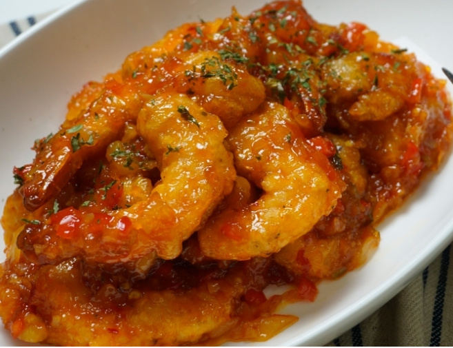

Chilli Prawns

Description
Korean/Japanese Chinese food is some what different to your regular dishes you find in Chinese restaurant.
One of my favourite is chilli prawns, known in korea as Ggansho-Sewoo.
It's a lightly battered deep fried prawns with tomato & Chinese spicy bean based sauce.
Ingredients
- Prawns, peeled.
- Lots of chopped garlic
- Spring onion
- Tomato ketchup
- Dubanjang(Chinese chilli bean paste)
- Soy sauce
- Corn flour
- Chinese cooking wine
- Chilli oil
Steps
- Prepare the batter by combining water and corn flour, 3:2 ratio.
- Add the prawns to the batter.
- Heat up the pot with hot oil and deep fry the prawns until light golden colour. Put the prawns aside.
- Heat up the wok with chilli oil. Once hot add garlic and chopped spring onions and cook them lightly.
- Add 5 tablespoon of tomato ketchup, 1 tablespoon of spicy chilli beans and dash of soy sauce. Stir fry them gently and add 3 tablespoon of sugar.
- Prepare corn flour mixed with water. 1:1 ratio. This mixture will thicken up the sauce
- Add half a cup of water/stock and when it comes to boiling add corn flour mixture in low heat.
- Once achieved desired consistency add the prawns in medium heat and coat them gently.
- Plate and serve